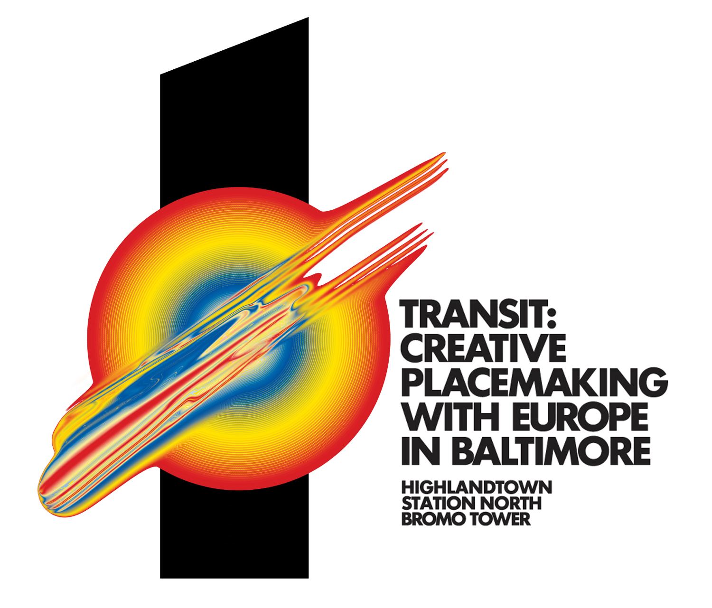

Cooking Light magazine. 2015.
Exhibition in Fundació Tàpies, Barcelona.
2016
Cover for this issue about packaging.
2018

The Spanish embassy in Spain Poject.
2013
Collaboration for for 36 Days of Type special edition.
2015
Capital letter K of an old English script.
2008
Album cover with EMI on this great album of brass led retro instrumentals.
2014